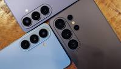
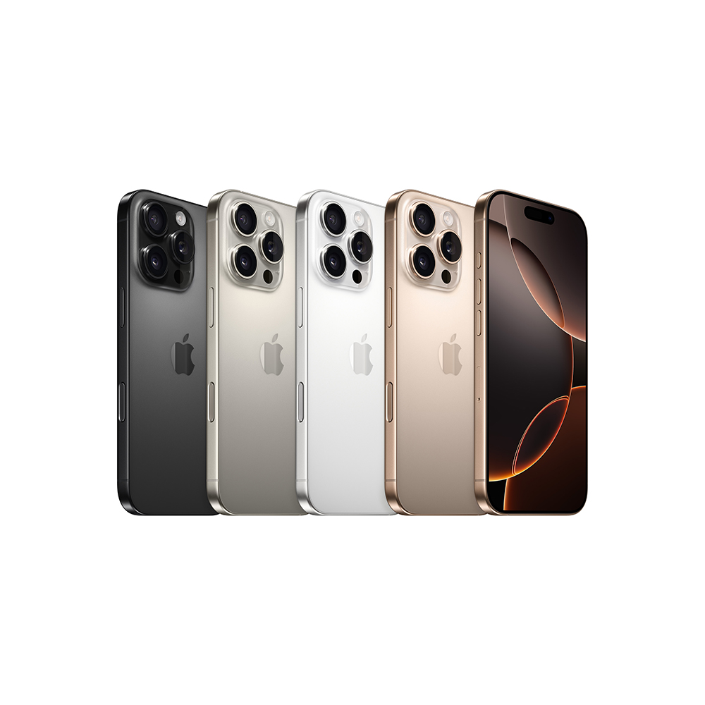
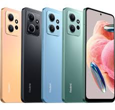
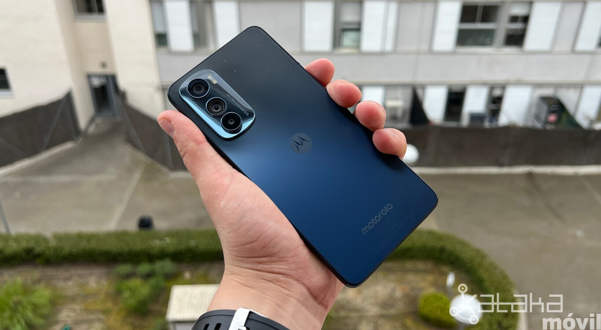
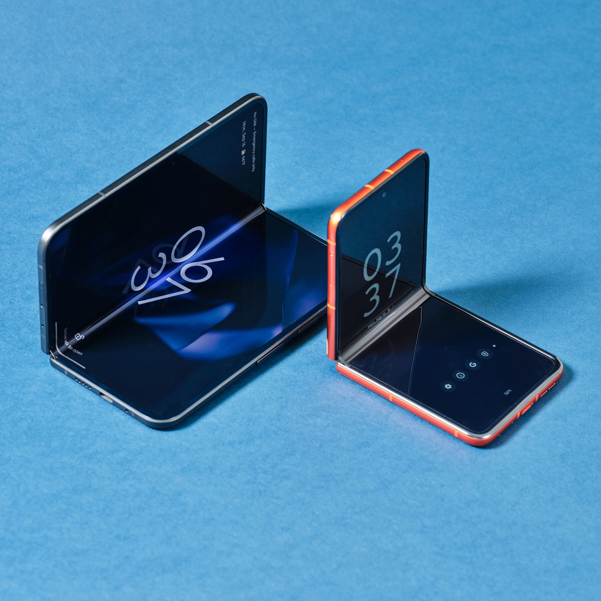
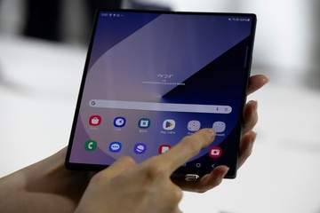

[ GAMA ALTA / PREMIUM ]Los celulares de gama alta representan la cima del poder tecnológico. Están equipados con los procesadores más rápidos del mercado, pantallas OLED con colores hiperrealistas y sistemas de cámaras profesionales capaces de grabar en calidad de cine. Marcas como Apple y Samsung lideran este sector con sus modelos Ultra y Pro. |
  |
[ GAMA MEDIA / CALIDAD-PRECIO ]La gama media es la favorita de los usuarios porque ofrece el equilibrio perfecto. Estos celulares heredan características de los teléfonos caros (como buenas pantallas y baterías gigantes que duran todo el día) pero a un precio sumamente accesible. Xiaomi y Motorola dominan por completo esta categoría. |
  |
[ FUTURO / PLEGABLES ]Las pantallas plegables son la innovación más sorprendente de la industria. Estos dispositivos funcionan como un celular normal al estar cerrados, pero se abren para convertirse en una tableta completa. Utilizan tecnología de vidrio flexible de alta ingeniería, cambiando para siempre el futuro del entretenimiento y el trabajo. |
  |
COMENTARIOS |